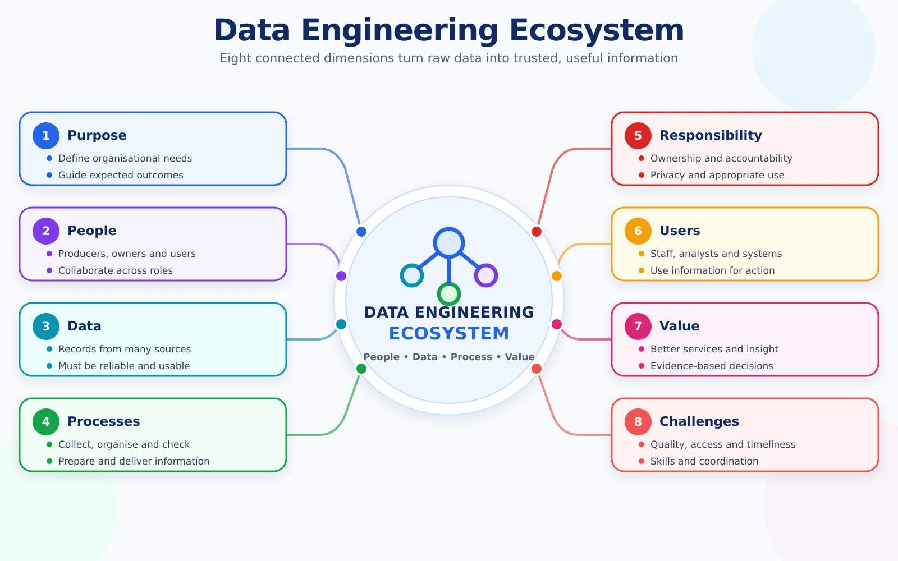

What have you learned?
Use these questions to check your conceptual understanding before moving to the next topic.

Exit reflection
- I can explain data engineering in my own words.
- I can explain why raw data is not automatically useful.
- I can identify data producers, owners, engineers and users.
- I can describe the general journey from data generation to use.
- I can recognise quality, privacy and responsibility issues.
Take-home task · A Data Ecosystem in Everyday Life
Select one familiar digital service, such as UTM Smart, Grab, Shopee, Google Maps, online banking, Netflix or Spotify. Prepare a short response covering:
- The purpose of the service
- Who generates the data
- Examples of data generated
- Who uses the data
- Why reliable data is important
- One possible data-related problem
- One privacy or ethical concern
Recommended length: 300–500 words.
✓
Final check: Your explanation should focus on the ecosystem and its stakeholders. You do not need to propose technical platforms or a detailed architecture.